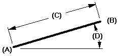

Draw a line

-
Choose the Line command
 .
. -
Click where you want the line to begin (A).
-
Click where you want the line to end (B). This defines the line's length (C) and rotation angle (D).
-
Do one of the following:
-
To draw a single line, press the Esc key to end the Line command, or click a different command.
-
To end the first line and start another, click the right mouse button. This restarts the Line command.
-
To draw a series of connected lines, click where you want each line segment to end, and then press Esc when you are done.
Tip:If you close the shape, the command restarts so you begin drawing again.
-
-
Instead of clicking to draw the end points, you can type values on the value edit boxes. You can also use a combination of graphic and edit box input.
-
When you use the IntelliSketch Point On Element option, you can draw a line tangent to two curved elements. First click the curved element, and then move the cursor through the tangent intent zone on the first element, and then use IntelliSketch to establish a tangent relationship to the other element.
If you do not use the tangent intent zone, the line is connected to the elements, but is not tangent to them.
-
You can use IntelliSketch to make an end point of a line tangent or perpendicular to the key point or end point of another element.
-
You can use the options on the Line command bar and the commands on the shortcut menu to edit a line.
How do I
Draw connected lines and arcsExample: Connect points while drawing a line
Learn more
Drawing 2D elementsLook up more details
Line commandLine and Arc command bar